Crimson Pro is a serif typeface with contemporary, clear, classic, and rounded open curves. Made for reading, this family is perfect for textbooks, editorial websites, and more. It continues the tradition of beautiful, Garamond-inspired typefaces, often called "Garalde" or "Old Style". It has 8 currated weights in both Roman and Italic, and as Variable font has customizable weight axis.
The Benefits of Crimson Pro & Variable Fonts
1
Benefits of Variable Fonts
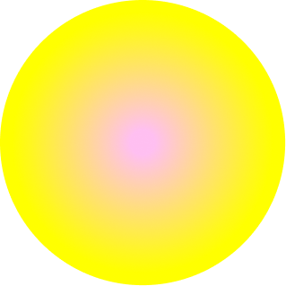
:c)
Roboto Flex is used as an example
Variable fonts are the latest in the evolution of fonts.
White Crimson Pro only has a variable Weight(wght) axis currently, a variable font can have other axes like Width(wdth), Slant(slnt), Gradiation(grad), and Optical size (opsz).
intro
What does this mean?
These axes allow designers greater flexibility to create and customize their own font instances for aesthetic and layout flexibility.
Part 1
Design
5
size
XS
S
M
L
XL
Easy on the Eyes
Crimson Pro’s cap height gives it better proportions and less visual noise, making it easier to read.
design
Weight Axis
White Rabbit with pink eyes White Rabbit with pink eyes White Rabbit with pink eyes White Rabbit with pink eyes White Rabbit with pink eyes White Rabbit with pink eyes White Rabbit with pink eyes White Rabbit with pink eyes White Rabbit with pink eyes White Rabbit with pink eyes White Rabbit with pink eyes White Rabbit with pink eyes
7
counter
With large counters and apertures, readers can easily recognize different characters at smaller sizes.
design
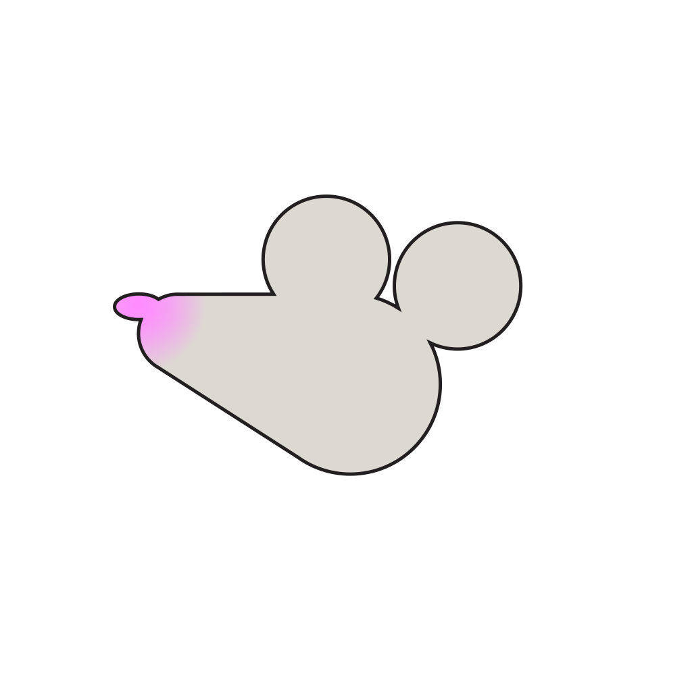
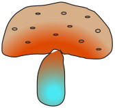
9
Weight Axis
Roman
Italic
Size
900
XS
S
M
L
XL
design
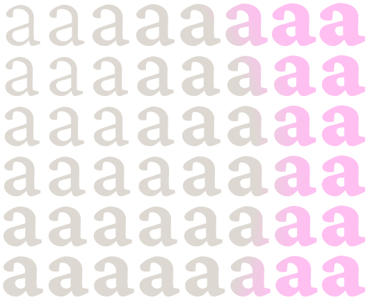
Weight
With unlimited options along this axis, designers can tweak Crimson Pro to get the exact look and feel they want. They can create custom styles, name them, and save those instances to use throughout the design.
11
Regular
Italic
A
B
C
D
E
F
G
H
I
J
K
L
M
N
O
P
Q
R
S
T
U
V
W
X
Y
Z
uppercase
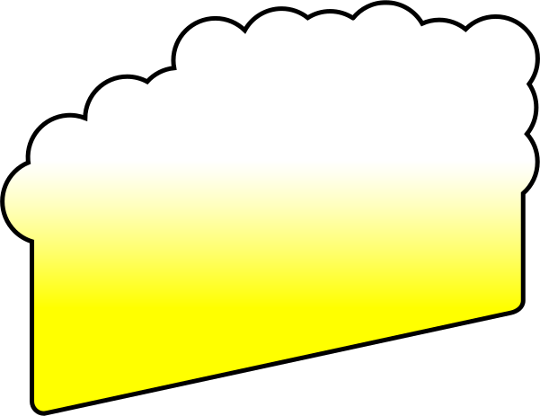
₤
&
$
€
#
+
÷
×
=
*
?
%
!
<
[
]
13
Regular
Italic
a
b
c
d
0
1
e
f
g
h
2
3
i
j
k
4
5
l
m
n
6
7
o
p
q
r
8
9
s
t
u
v
w
x
y
z
design
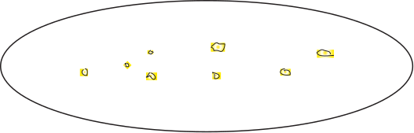
15
Looking to use Crimson Pro in your language?
AFRIKAANS
ENGLISH
ITALIAN
ROMANIAN
ALBANIAN
ESTONIAN
LATVIAN
SLOVAK
CATALAN
FINNISH
LITHUANIAN
SLOVENIAN
CROATIAN
FRENCH
MALTESE
SPANISH
NORWEGIAN
GERMAN
CZECH
SWEDISH
DANISH
HUNGARIAN
POLISH
TURKISH
DUTCH
ICELANDIC
PORTUGUESE
VIETNAMESE
preview
ALICE'S ADVENTURE IN WONDERLAND
Chapter II
For the Mouse was swimming away from her as hard as it could go, and making quite a commotion in the pool as it went.
So she called softly after it, ‘Mouse dear! Do come back again, and we won’t talk about cats or dogs either, if you don’t like them!’ When the Mouse heard this, it turned round and swam slowly back to her: its face was quite pale (with passion, Alice thought), and it said in a low trembling voice, ‘Let us get to the shore, and then I’ll tell you my history, and you’ll understand why it is I hate cats and dogs.’
It was high time to go, for the pool was getting quite crowded with the birds and animals that had fallen into it: there were a Duck and a Dodo, a Lory and an Eaglet, and several other curious creatures. Alice led the way, and the whole party swam to the shore.
ALICE SE AVONTURE IN WONDERLAND
Hoofstuk II
For the Mouse was swimming away Want die muis swem so hard soos dit van haar weg was, en maak 'n hele opskudding in die swembad.
Sy het toe saggies daarna geroep: ‘Muis skat! Kom weer terug, en ons sal ook nie oor katte of honde praat as jy nie van hulle hou nie!’ Toe die muis dit hoor, draai hy om en swem stadig terug na haar: sy gesig was baie bleek (met passie , Dink Alice), en dit sê met 'n lae bewende stem: ‘Laat ons by die oewer uitkom, dan vertel ek jou my geskiedenis, en jy sal verstaan waarom ek katte en honde haat.’
Dit was hoog tyd om te gaan, want die swembad het baie oorvol geraak met die voëls en diere wat daarin geval het: daar was 'n eend en 'n Dodo, 'n Lory en 'n Arend en verskeie ander nuuskierige wesens. Alice lei die pad, en die hele party swem na die oewer.
LE AVVENTURE D’ALICE
Capitolo II
Perché il Mouse le stava nuotando via più forte che poteva, e stava facendo un bel trambusto nella piscina.
Quindi lo chiamò dolcemente, “Mouse caro! Torna di nuovo, e non parleremo nemmeno di cani o gatti, se non ti piacciono!” Quando il Mouse lo sentì, si voltò e le tornò lentamente a nuotare: il suo viso era piuttosto pallido (con passione , Pensò Alice), e disse a bassa voce tremante: “Andiamo a riva, e poi ti racconterò la mia storia, e capirai perché odio cani e gatti”.
Era giunto il momento di andare, perché la piscina stava diventando piuttosto affollata con gli uccelli e gli animali che vi erano caduti: c'erano un'anatra e un Dodo, un Lory e un Eaglet e molte altre creature curiose. Alice aprì la strada e l'intera festa nuotò fino alla riva.
AVENTURILE LUI ALICE IN TARA MINUNILOR
Capitolul II
Căci șoarecele înota departe de ea, cât putea de greu și făcea o agitație în piscină, așa cum mergea.
Așa că a sunat ușor după ea: „Mouse drag! Reveniți din nou și nici nu vom vorbi despre pisici sau câini, dacă nu le place!” Când șoarecele a auzit acest lucru, s-a întors și a înotat încet spre ea: chipul era destul de palid (cu pasiune , S-a gândit Alice) și a spus cu o voce tremurândă: „Hai să ajungem la țărm, apoi o să vă spun istoria mea și veți înțelege de ce este vorba că urăsc pisicile și câinii”.
Era timpul să mergem, căci bazinul devenea destul de aglomerat cu păsările și animalele care căzuseră în ea: erau un Rău și un Dodo, un Lory și un Eaglet și alte câteva creaturi curioase. Alice a condus drumul și toată petrecerea a înotat până la țărm.
AVENTURAT E ALISE NË VENDIN E MREKULLIVE
Kapitulli II
Sepse Miu po notohej larg saj, aq sa mund të shkonte, dhe bënte mjaft mall në pishinë siç shkonte.
Kështu që ajo e thirri me butësi pas saj, ‘Mouse e dashur! A u kthehu përsëri, dhe ne nuk do të flasim as për mace ose qen, nëse nuk i pëlqen ata!’ Kur Miu e dëgjoi këtë, u kthye dhe rrotullua ngadalë përsëri tek ajo: fytyra e saj ishte mjaft e zbehtë (me pasion , Mendoi Alice), dhe tha me një zë të ulët të dridhur, ‘Le të arrijmë në breg, dhe pastaj unë do t'ju tregoj historinë time, dhe ju do të kuptoni pse është unë i urrej macet dhe qentë’.
Ishte koha e duhur për të shkuar, sepse pishina ishte shumë e mbushur me zogjtë dhe kafshët që kishin rënë në të: kishte një Duck dhe një Dodo, një Lory dhe një Eaglet dhe disa krijesa të tjera kurioze. Alice udhëhoqi rrugën, dhe e gjithë festa notoi në breg.
ALICE’I SEIKLUSED IMEDEMAAL
II peatükk
Sest hiir ujus temast eemale nii kõvasti, kui vähegi võis minna, ja tegi basseinis käies üsna käratsema.
Nii et ta helistas pärast seda pehmelt: ‘Hiir kallis! Tulge jälle tagasi ja me ei räägi ka kassidest ega koertest, kui teile need ei meeldi!’ Kui Hiir seda kuulis, keeras see ringi ja ujus aeglaselt tema poole: tema nägu oli üsna kahvatu (kirega), Mõtles Alice), ja ütles vaiksel väriseval häälel: ‘Laskem kaldale, siis ma räägin teile oma ajaloo ja saate aru, miks ma vihkan kasse ja koeri.’
Oli viimane aeg minna, sest bassein oli sinna kukkunud lindude ja loomadega üsna rahvarohke: seal olid part ja dodo, lory ja kotkas ning mitmed muud uudishimulikud olendid. Alice viis teed ja kogu pidu ujus kaldale.
ALISES PIEDZĪVOJUMI BRĪNUMZEMĒ
II nodaļa
Tā kā Pelīte peldējās prom no viņas tik grūti, cik vien varēja noiet, un diezgan satraucoši peldējās baseinā.
Tāpēc viņa maigi pēc tā sauca: “Pele mīļā! Atgriezieties vēlreiz, un mēs nerunāsim arī par kaķiem vai suņiem, ja jums tie nepatīk!” Kad Pele to dzirdēja, tā apgriezās un lēnām peldēja viņai pretī: tās seja bija diezgan bāla (ar aizrautību) , Alise domāja), un tā zemā drebošā balsī sacīja: “Ļaujiet mums nokļūt krastā, un tad es jums pastāstīšu savu vēsturi, un jūs sapratīsit, kāpēc es ienīstu kaķus un suņus.”
Bija pēdējais laiks doties, jo baseins bija diezgan pieblīvēts ar tajā iekritušajiem putniem un dzīvniekiem: tur bija pīle un dodo, lorijs un ērglis, kā arī vairākas citas ziņkārīgas radības. Alise veda ceļu, un visa ballīte peldēja uz krastu.
ALICA V KRAJINE ZÁZRAKOV
Kapitola II
Pretože myš od nej plávala tak tvrdo, ako to len šlo, a robila v bazéne celkom rozruch.
Zavolala potom ticho, „drahá myš! Vráťte sa znova a nebudeme hovoriť ani o mačkách alebo psoch, ak sa vám nepáčia! “Keď to myš počula, otočila sa a pomaly k nej plávala: jej tvár bola dosť bledá (s vášňou) , Pomyslela si Alice) a tichým chvejúcim sa hlasom povedala: „Poďme na pobrežie, potom ti poviem svoju históriu a pochopíš, prečo to nenávidím mačky a psy.“
Nastal najvyšší čas ísť, pretože bazén bol dosť preplnený vtákmi a zvieratami, ktoré do neho spadli: boli kačica a Dodo, Lory a Eaglet a niekoľko ďalších zvedavých tvorov. Alice viedla cestu a celá strana plavala na pobrežie.
LES AVENTURES D’ALÍCIA
Capítol II
Perquè el ratolí nedava tan lluny com es podia, i feia molta commoció a la piscina.
Llavors, ella va cridar amb suavitat: “Ratolí estimat! Torneu-hi de nou i tampoc parlarem de gats ni de gossos, si no us agrada!” Quan el Ratolí va sentir això, es va girar i va nedar lentament cap a ella: la cara era pàl·lida (amb passió , Va pensar Alícia) i va dir amb veu tremolosa: “Anem a la costa, i després us explicaré la meva història i entendreu per què és que odio els gats i els gossos”.
Era hora d’anar-hi, perquè la piscina s’estava fent força plena d’ocells i animals que hi havien caigut: hi havia un Ànec i un Dodo, un Lory i un Àguila i diverses altres criatures curioses. Alícia va dirigir el camí i tota la festa va nedar fins a la vora.
LIISAN SEIKKAILUT IHMEMAASSA
II luku
Sillä hiiri ui pois hänestä niin kovaa kuin mahdollista, ja teki melko levottomuuden uima-altaassa, kun se meni.
Joten hän soitti sen jälkeen pehmeästi: ‘Hiiri rakas! Älä tule takaisin, emmekä puhu myöskään kissoista tai koirista, jos et pidä heistä!’ Kun hiiri kuuli tämän, se kääntyi ympäri ja ui hitaasti takaisin hänen luokseen: sen kasvot olivat melko vaaleat (intohimoisesti), Alice ajatteli), ja se sanoi vapisevalla äänellä: ‘Menkäämme rannalle ja kerron sitten historiani, ja ymmärrät miksi vihaan kissoja ja koiria.’
Oli korkea aika lähteä, sillä uima-allas oli tulossa melko täynnä siihen putoantuneita lintuja ja eläimiä: siellä oli ankka ja dodo, lory ja kotka sekä useita muita uteliaita olentoja. Alice johti tietä, ja koko puolue ui rannalle.
ALISOS NUOTYKIAI STEBUKLŲ ŠALYJE
II skyrius
Nes Pelė plaukė toliau nuo jos kiek įmanoma sunkiau, o baseine jautėsi gana linksma.
Po to ji švelniai paragino: „Pelė brangioji! Grįžkite dar kartą, ir mes nekalbėsime apie kates ar šunis, jei jums jų nepatinka!“ Kai pele tai išgirdo, ji apsisuko ir lėtai plaukė atgal į ją: jos veidas buvo gana blyškus (su aistra) , Pagalvojo Alisa), ir žemu drebančiu balsu tarė: „Leiskime į krantą, tada aš jums papasakosiu savo istoriją ir jūs suprasite, kodėl aš nekenčiu kačių ir šunų“.
Buvo pats laikas eiti, nes baseinas buvo gana gausiai apkrautas į jį patekusiais paukščiais ir gyvūnais: antis ir Dodo, Loriu ir ereliu bei keletu kitų smalsių būtybių. Alisa vedė kelią, o visa partija plaukė į krantą.
ALIČINE PUSTOLOVŠČINE
Poglavje II
Miška je plavala od nje tako težko, kot bi lahko šlo, in v bazenu se je precej zmedla.
Zato je tiho zaklicala za njo: 'Miška draga! Vrnite se še enkrat in tudi o mačkah in psih ne bomo govorili, če jih ne marate! «Ko je Miška to slišala, se je obrnila in počasi plavala nazaj k njej: njen obraz je bil precej bled (s strastjo) , Je pomislila Alice) in rekla je tiho, drhtečim glasom: "Pustimo do obale, nato pa vam bom povedal svojo zgodovino, in razumeli boste, zakaj sovražim mačke in pse."
Skrajni čas je šel, saj je bil bazen precej natrpan s pticami in živalmi, ki so padle vanj: tam sta bila Raca in Dodo, Lory in Eaglet ter več drugih radovednih bitij. Alice je vodila pot in celotna zabava je plavala na obalo.
ALISINE AVANTURE U ZEMLJI ČUDESA
II. Poglavlje
Miš se plivao od nje koliko god je mogao, i napravila zbrku u bazenu dok je išla.
Pa je tiho zazvala nakon toga: „Miše draga! Vratite se ponovo i nećemo razgovarati ni o mačkama ni o psima, ako vam se ne sviđaju!” Kad je Miš to čuo, okrenuo se i polako plivao prema njoj: lice joj je bilo sasvim blijedo (sa strašću , Pomislila je Alice) i rekla je tihim drhtavim glasom: „Idemo na obalu, a zatim ću vam ispričati svoju povijest, a vi ćete shvatiti zašto mrzim mačke i pse.”
Bilo je krajnje vrijeme za izlazak, jer je bazen bio prilično prepun ptica i životinja koje su upale u njega: tu su bili Patka i Dodo, Lory i Orao i nekoliko drugih znatiželjnih stvorenja. Alice je vodila na put, a cijela zabava otplivala je do obale.
LES AVENTURES D’ALICE
Chapitre II
Car la souris nageait loin d’elle aussi fort que possible, et faisait beaucoup de bruit dans la piscine.
Alors elle appela doucement: «Chère Souris! Reviens encore, et nous ne parlerons pas non plus des chats ou des chiens, si tu ne les aimes pas!» Quand la Souris entendit ceci, elle se retourna et revint lentement à elle: son visage était plutôt pâle (avec passion, pensa Alice), et elle dit d’une voix basse et tremblante: «Allons au bord de la mer, et ensuite je te raconterai mon histoire, et tu comprendras pourquoi c’est que je déteste les chats et les chiens.»
Il était grand temps d’y aller car la piscine était pleine à craquer d’oiseaux et d’animaux qui y étaient tombés: il y avait un canard et un dodo, un lory et un aigle, ainsi que plusieurs autres créatures curieuses. Alice a ouvert la voie et toute la partie a nagé jusqu’au rivage.
L-AVVENTURI TA 'ALICE FIL-WONDERLAND
Kapitolu II
Għall-ġurdien kien qed jgħum 'il bogħod minnha kemm jista' jkun imur, u jagħmel pjuttost għaqda fil-pixxina kif mar.
Allura hi sejħet ippronunzjata wara, "Ġurdien għeżież! Terġa 'terġa' lura, u lanqas ma nitkellmu dwar qtates jew klieb, jekk ma jħobbux!" Meta l-ġurdien sema 'dan, dawwar tond u għawm bil-mod lura lejn tagħha: wiċċu kien pjuttost pallidu (b'passjoni , Ħaseb Alice), u qalet b'vuċi baxxa tregħid, "Ejjew naslu lejn ix-xatt, u allura ngħidlek l-istorja tiegħi, u intom tifhmu għaliex qed jobgħod il-qtates u l-klieb."
Wasal iż-żmien biex immorru, għax il-pixxina kienet toħroġ pjuttost iffullata bl-għasafar u l-annimali li kienu waqgħu fiha: kien hemm Papra u Dodo, Lory u Eaglet, u bosta kreaturi kurjużi oħra. Alice mexxiet it-triq, u l-partit kollu kien jgħum fix-xatt.
LAS AVENTURAS DE ALICIA
Capítulo II
Porque el Ratón estaba nadando lejos de ella tan fuerte como podía, y estaba haciendo una gran conmoción en la piscina a medida que avanzaba.
Entonces ella llamó suavemente después de eso, ‘¡Querido ratón! ¡Vuelve otra vez, y tampoco hablaremos de gatos o perros, si no te gustan!’ Cuando el Ratón escuchó esto, se dio la vuelta y nadó lentamente hacia ella: su cara estaba bastante pálida (con pasión , Pensó Alice), y decía en voz baja y temblorosa: ‘Vamos a la orilla, y luego te contaré mi historia, y entenderás por qué odio los gatos y los perros’.
Ya era hora de irse, porque la piscina se estaba abarrotando de pájaros y animales que habían caído en ella: había un pato y un dodo, un lory y un aguilucho, y varias otras criaturas curiosas. Alice abrió el camino y toda la fiesta nadó hasta la orilla.
ALENKA V ŘÍŠI DIVŮ
Kapitola II
Myš od ní plavala tak tvrdě, jak to šlo, a v bazénu udělala docela rozruch.
Zavolala tiše, „drahá myš! Vraťte se znovu a nebudeme mluvit ani o kočkách nebo psech, pokud se vám nelíbí!” Když to myš slyšela, otočila se a pomalu k ní plavala: její tvář byla docela bledá (s vášní) , Pomyslela si Alice) a řekla tichým chvějícím se hlasem: „Pojďme na břeh a pak ti řeknu svou historii a pochopíš, proč to nenávidím kočky a psy.”
Byl nejvyšší čas jít, protože bazén byl docela přeplněný ptáky a zvířaty, které do něj spadly: byly kachna a Dodo, Lory a Eaglet a několik dalších zvědavých tvorů. Alice vedla cestu a celá strana plavala na břeh.
ALICE'S ABENTEUER IM WUNDERLAND
Kapitel II
Denn die Maus schwamm von ihr weg, so schwer es ging, und machte im Pool eine ziemliche Aufregung, als es ging.
Joten hän soitti sen jälkeen pehmeästi: “Hiiri rakas! Älä tule takaisin, emmekä puhu myöskään kissoista tai koirista, jos et pidä heistä!” Kun hiiri kuuli tämän, se kääntyi ympäri ja ui hitaasti takaisin hänen luokseen: sen kasvot olivat melko vaaleat (intohimoisesti) , Alice ajatteli), ja se sanoi vapisevalla äänellä: “Menkäämme rannalle ja kerron sitten historiani, ja ymmärrät miksi vihaan kissoja ja koiria.”
Het was de hoogste tijd om te gaan, want het zwembad werd behoorlijk druk met de vogels en dieren die erin waren gevallen: er waren een eend en een dodo, een lory en een adelaar en verschillende andere nieuwsgierige wezens. Alice liep voorop en het hele gezelschap zwom naar de kust.
ALICE I EVENTYRLAND
Kapittel II
For musen svømte bort fra henne så hardt som den kunne gå, og gjorde ganske opprykk i bassenget mens det gikk.
Så hun ringte bløtt etter det, "Mus kjære! Kom tilbake igjen, så snakker vi ikke om katter eller hunder heller, hvis du ikke liker dem!" Da musen hørte dette, snudde den seg og svømte sakte tilbake til henne: ansiktet var ganske blekt (med lidenskap , Tenkte Alice), og den sa med en lav skjelvende stemme, "La oss komme til fjæra, så skal jeg fortelle deg historien min, så vil du forstå hvorfor det er at jeg hater katter og hunder."
Det var på høy tid å gå, for bassenget ble ganske overfylt med fuglene og dyrene som hadde falt i det: det var en and og en Dodo, en Lory og en Eaglet og flere andre nysgjerrige skapninger. Alice ledet an, og hele partiet svømte til land.
ALICE I UNDERLANDET
Kapitel II
För musen simmade bort från henne så hårt som den kunde gå, och gjorde ganska uppror i poolen när det gick.
Så hon kallade mjukt efter det, "Mus kära! Kom tillbaka igen, så kommer vi inte prata om katter eller hundar heller, om du inte gillar dem!" När musen hörde detta, vände det sig och simmade långsamt tillbaka till henne: ansiktet var ganska blekt (med passion , Tänkte Alice), och det sa med en låg skakande röst, "Låt oss komma till stranden, och sedan ska jag berätta min historia, och du förstår varför det är jag hatar katter och hundar."
Det var hög tid att gå, för poolen blev ganska trångt med fåglar och djur som föll i den: det fanns en anka och en Dodo, en Lory och en örn och flera andra nyfikna varelser. Alice ledde vägen och hela partiet simmade till stranden.
ALICE'S EVENTYR I EVENTYRLAND
Kapitel II
For musen svømte væk fra hende så hårdt som den kunne gå, og gjorde en ganske ophidselse i poolen, mens den gik.
Så hun kaldte blidt efter det, “Mus kære! Kom tilbage igen, så taler vi heller ikke om katte eller hunde, hvis du ikke kan lide dem!” Da musen hørte dette, vendte det sig rundt og svømmede langsomt tilbage til hende: ansigtet var ret bleg (med lidenskab), Tænkte Alice), og det sagde med en lavt rystende stemme, “Lad os komme til kysten, så vil jeg fortælle dig min historie, så vil du forstå, hvorfor det er, jeg hader katte og hunde.”
Det var på høje tid at gå, for puljen blev ret overfyldt med de fugle og dyr, der var faldet i den: der var en And og en Dodo, en Lory og en Eaglet og flere andre nysgerrige væsener. Alice førte vejen, og hele festen svømmede til kysten.
ALIZ KALANDJAI CSODAORSZÁGBAN
II. Fejezet
Mert az egér annyira úszott tőle, amennyire csak tudott, és eléggé zavart volt a medencében, ahogy ment.
Ezért halkan felszólította: - Egér kedvesem! Ne gyere vissza, és nem is beszélünk macskákról vagy kutyákról, ha nem tetszik nekik! - Amikor az egér ezt meghallotta, megfordult és lassan visszaugrott feléje: arca sápadt volt (szenvedélyesen) , Gondolta Alice), és remegő hangon azt mondta: - Menjünk a partra, és akkor elmondom nekem a történelem, és meg fogod érteni, miért utálom macskákat és kutyákat. -
Legfőbb ideje elmenni, mert a medence eléggé zsúfolttá vált a beleesett madarakkal és állatokkal: volt kacsa és egy dodo, egy lory és egy sas, és még sok más kíváncsi lény. Alice vezette az utat, és az egész párt a part felé úszott.
ALICJA W KRAINIE CZARÓW
Rozdział II
Mysz odpływała od niej tak mocno, jak tylko mogła, i powodowała niemałe zamieszanie w basenie.
Po to ji švelniai paragino: „Pelė brangioji! Grįžkite dar kartą, ir mes nekalbėsime apie kates ar šunis, jei jums jų nepatinka!“ Kai pele tai išgirdo, ji apsisuko ir lėtai plaukė atgal į ją: jos veidas buvo gana blyškus (su aistra) , Pagalvojo Alisa), ir žemu drebančiu balsu tarė: „Leiskime į krantą, tada aš jums papasakosiu savo istoriją ir jūs suprasite, kodėl aš nekenčiu kačių ir šunų“.
Najwyższy czas iść, bo basen stawał się dość zatłoczony ptakami i zwierzętami, które do niego wpadły: były Kaczka i Dodo, Lory i Orlik oraz kilka innych ciekawych stworzeń. Alice poprowadziła i cała grupa popłynęła na brzeg.
ALICE'IN HARIKALAR DIYARI MACERALARI
II. Bölüm
Çünkü Fare ondan olabildiğince sert bir şekilde yüzüyordu ve olduğu gibi havuzda oldukça kargaşa yaratıyordu.
Böylece usulca aradı, ‘Fare canım! Tekrar geri dönün ve kedileri veya köpekleri de konuşmayacağız, eğer onlardan hoşlanmıyorsanız!’ Fare bunu duyduğunda, etrafına döndü ve yavaşça ona doğru yüzdü: yüzü oldukça solgundu (tutkuyla) , Alice düşündü) ve az titreyen bir sesle, ‘Kıyıya geçelim ve sonra size tarihimi anlatacağım ve neden kedilerden ve köpeklerden nefret ettiğimi anlayacaksınız’ dedi.
Gitme zamanı gelmişti, çünkü havuzun içine düşmüş kuşlar ve hayvanlarla oldukça kalabalıklaşıyordu: bir Ördek ve Dodo, bir Lory ve Eaglet ve diğer meraklı yaratıklar vardı. Alice önderlik etti ve bütün parti kıyıya yüzdü.
ALICE'S AVONTUREN IN WONDERLAND
Hoofdstuk II
Want de muis zwom zo hard als ze kon weg van haar en maakte in het zwembad nogal wat opschudding.
Dus riep ze er zachtjes naar, ‘Muis schat! Kom nog een keer terug, en we zullen ook niet over katten of honden praten, als je ze niet leuk vindt!’ Toen de muis dit hoorde, draaide het zich om en zwom langzaam terug naar haar: zijn gezicht was vrij bleek (met passie , Dacht Alice), en het zei met zachte, trillende stem: ‘Laten we naar de kust gaan, dan zal ik je mijn geschiedenis vertellen, en je zult begrijpen waarom ik katten en honden haat.’
Het was de hoogste tijd om te gaan, want het zwembad werd behoorlijk druk met de vogels en dieren die erin waren gevallen: er waren een eend en een dodo, een lory en een adelaar en verschillende andere nieuwsgierige wezens. Alice liep voorop en het hele gezelschap zwom naar de kust.
ÆVINTÝRI ALICE Í UNDRALANDI
II. Kafli
Því að músin var að synda í burtu frá henni eins hart og hún gat gengið og vakti nokkuð uppreist æru í lauginni eins og gengur.
Svo hún kallaði mjúklega eftir því, „Mús elskan! Komdu aftur og við tölum ekki um ketti eða hunda heldur, ef þér líkar ekki við þá!“ Þegar músin heyrði þetta, sneri hún sér við og synti hægt aftur til hennar: andlitið var alveg föl (af ástríðu , Hugsaði Alice) og það sagði með lágum skjálfandi röddu, „Við skulum komast að ströndinni, og þá segi ég sögu mína, og þú munt skilja af hverju það er að ég hata ketti og hunda.“
Það var kominn tími til að fara, því laugin var orðin ansi fjölmenn af fuglum og dýrum sem höfðu dottið í hana: það voru Önd og Dodo, Lory og Eaglet og nokkrar aðrar forvitnar skepnur. Alice leiddi veginn og allur flokkurinn synti að ströndinni.
ALICE NO PAÍS DAS MARAVILHAS
Capítulo II
Pois o Rato estava nadando para longe dela o máximo que podia, e fazendo uma grande comoção na piscina.
Então ela ligou suavemente: 'Mouse querido! Volte novamente, e também não falaremos sobre cães ou gatos, se você não gostar deles!' Quando o Mouse ouviu isso, virou-se e nadou lentamente de volta para ela: seu rosto estava muito pálido (com paixão Alice pensou), e disse em voz baixa e trêmula: 'Vamos para a praia, e depois vou lhe contar minha história, e você entenderá porque é que odeio cães e gatos'.
Já era hora de partir, pois a piscina estava ficando cheia de pássaros e animais que caíam nela: havia um pato e um dodô, um lory e uma águia e várias outras criaturas curiosas. Alice liderou o caminho, e toda a festa nadou até a praia.
CUỘC PHIÊU LƯU CỦA ALICE
Chương II
Vì Chuột đã bơi xa cô hết sức có thể, và làm cho một cuộc hỗn loạn trong hồ bơi như nó đã đi.
Vì vậy, cô gọi nhẹ nhàng sau nó, ‘Chuột thân yêu! Hãy quay lại lần nữa và chúng ta cũng sẽ không nói về mèo hay chó, nếu bạn không thích chúng! "Khi Chuột nghe thấy điều này, nó quay lại và bơi chậm lại với cô: khuôn mặt nó khá nhợt nhạt (với niềm đam mê , Alice nghĩ), và nó nói với giọng run run, 'Chúng ta hãy lên bờ, rồi tôi sẽ kể cho bạn nghe lịch sử của mình, và bạn sẽ hiểu tại sao tôi lại ghét mèo và chó'.
Đã đến lúc phải đi, vì hồ bơi đã trở nên khá đông đúc với những con chim và động vật rơi vào đó: có một con Vịt và Dodo, Lory và Đại bàng, và một số sinh vật tò mò khác. Alice dẫn đường, và cả nhóm bơi vào bờ.
Part 2
Example
submit
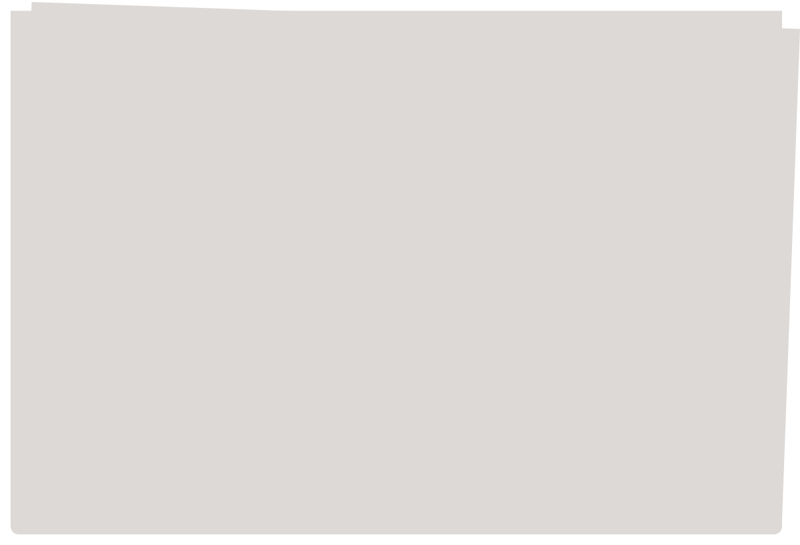
THE CRIMSON PRO DAILY
NO.53210
TUESDAY, JANUARY 07, 2020
$3.00
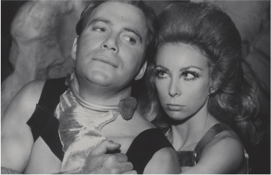
Genius, Genocide Denier Or Both?
Peter Handke, the Austrian author who was awarded this year's Nobel Prize in Literature, has been accused of falsifying history and praising war criminals.
By ALEX MARSHALL and CHRISTOPHER F. SCHUETZE
Copyright (c) 2020 The New York Times Company. All Rights Reserved.
Up for Sale: Pop Culture Mementos
By GEORGE GENE GUSTINES
MAD TEA
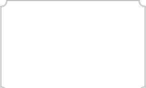
Type a Manuscript
BOOK TITLE :
OVERVIEW :
CHARACATERS :
STORY :
Manuscript
Type Playground
Weight Axis
This axis changes the thickness of the text by increasing or decreasing the boldness
400
Weight :
20
Size :
28
Line Height :
13
Jacques Le Bailley
Jacques is a senior type designer, living in The Hague. He started his own foundry Baron von Fonthausen in 2009, and has been dedicated to type design ever since. After graduating from the KABK and an apprenticeship at Linotype GmBH, he worked in Berlin and The Hague as Graphic Designer for several years, and then for many years at one of the most prestigious Dutch foundries, The Enschedé Type Foundry. He has also been a tutor at the WdKA art academy of Rotterdam and St. Joost Art Academy of Den Bosch. He mixes personal type projects with contract work for foundries like Monotype, Bold Monday and Google, and every now and then he does custom projects for several branding agencies.
acknowledgement
Sebastian Kosch
Sebastian is a software engineer and researcher with a weakness for good typography. He currently lives in Toronto. He sketched the first version of Crimson in 2009, before Google Fonts launched. He was a freshman engineering student at the time, and drawing letters was more fun than studying for his calculus exams.
 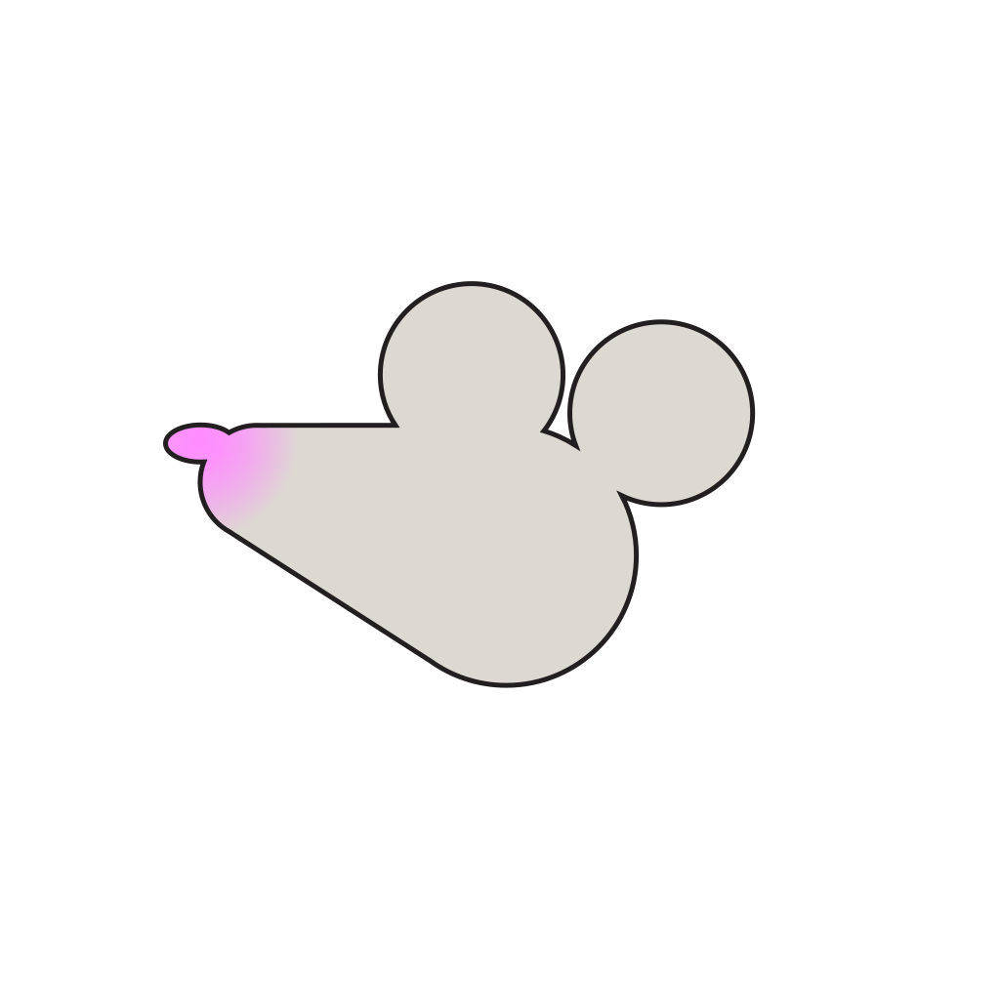
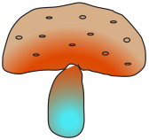
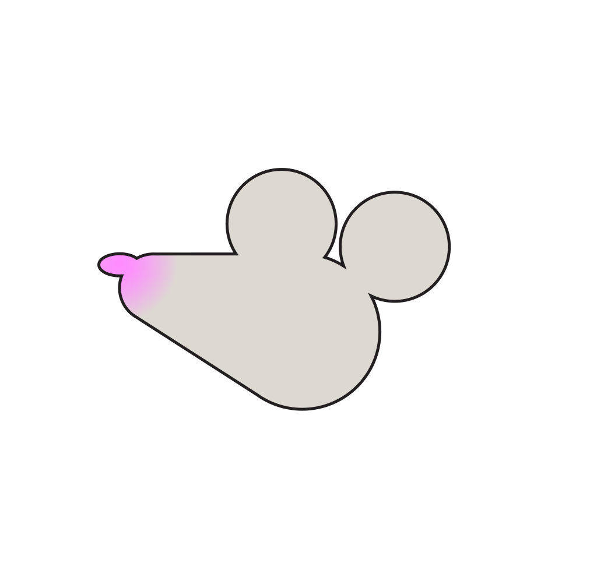
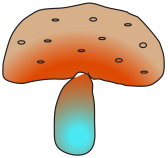